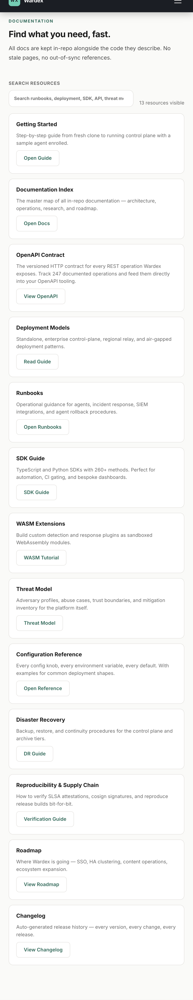
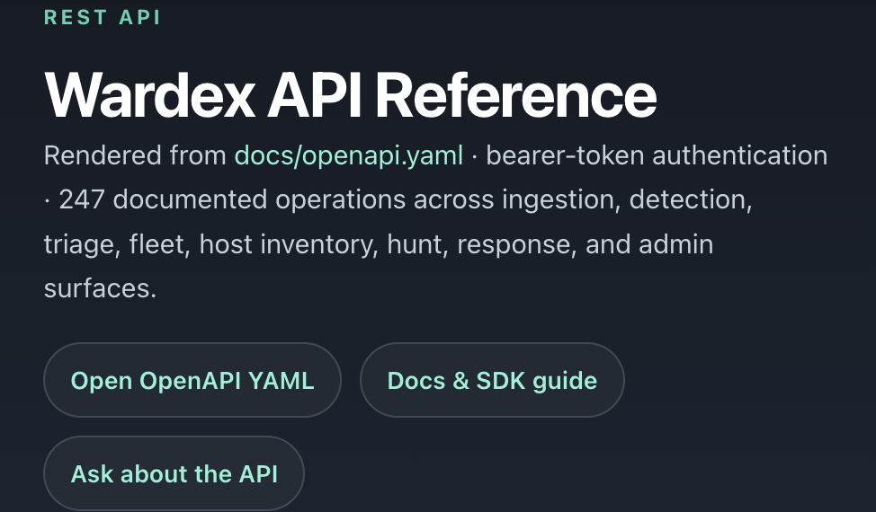

Documentation hub
The public resources surface brings quick start, docs index, runbooks, deployment guidance, and SDK references into one release-aligned page.
Resources
Documentation, runbooks, SDKs, and reference material — all versioned with the product.
Fresh Captures
Current screenshots from the public documentation hub and the Redoc-backed API reference.

The public resources surface brings quick start, docs index, runbooks, deployment guidance, and SDK references into one release-aligned page.

The versioned OpenAPI contract is published as a live Redoc experience so operators and SDK consumers can inspect the exact release surface.
Quick Start
npm ci --prefix admin-console && cargo build --releaseRequires Rust edition 2024, MSRV 1.88.0.
cargo runAPI, browser console, and embedded monitor on port 8080.
cat var/.wardex_tokenUse the token for the browser session and the scripted evaluation flow.
WARDEX_ADMIN_TOKEN="$(cat var/.wardex_token)" bash scripts/evaluate_to_value.shEvaluation-only first-run proof data proves the first alert, response dry-run, evidence export, and deployment trust report in one pass.
cargo run -- doctorReview the same local diagnostics that back the release posture.
docs/EVALUATE_WARDEX.mdThe canonical 15-minute path is versioned with the product and release gate.
Documentation
All docs are kept in-repo alongside the code they describe. No stale pages, no out-of-sync references.
Step-by-step guide from fresh clone to running control plane with a sample agent enrolled.
The canonical evaluation-only journey from start, token, and first-run proof seed through first alert, evidence export, and deployment trust reporting.
The master map of all in-repo documentation — architecture, operations, research, and roadmap.
The versioned HTTP contract for every REST operation Wardex exposes. Track 262 documented operations and feed them directly into your OpenAPI tooling.
Standalone, enterprise control-plane, regional relay, and air-gapped deployment patterns.
Operational guidance for agents, incident response, SIEM integrations, and agent rollback procedures.
TypeScript and Python SDKs with 260+ methods. Perfect for automation, CI gating, and bespoke dashboards.
Build custom detection and response plugins as sandboxed WebAssembly modules.
Adversary profiles, abuse cases, trust boundaries, and mitigation inventory for the platform itself.
Every config knob, every environment variable, every default. With examples for common deployment shapes.
Backup, restore, and continuity procedures for the control plane and archive tiers.
How to verify SLSA attestations, cosign signatures, and reproduce release builds bit-for-bit.
Where Wardex is going — SSO, HA clustering, content operations, ecosystem expansion.
Auto-generated release history — every version, every change, every release.
Interfaces